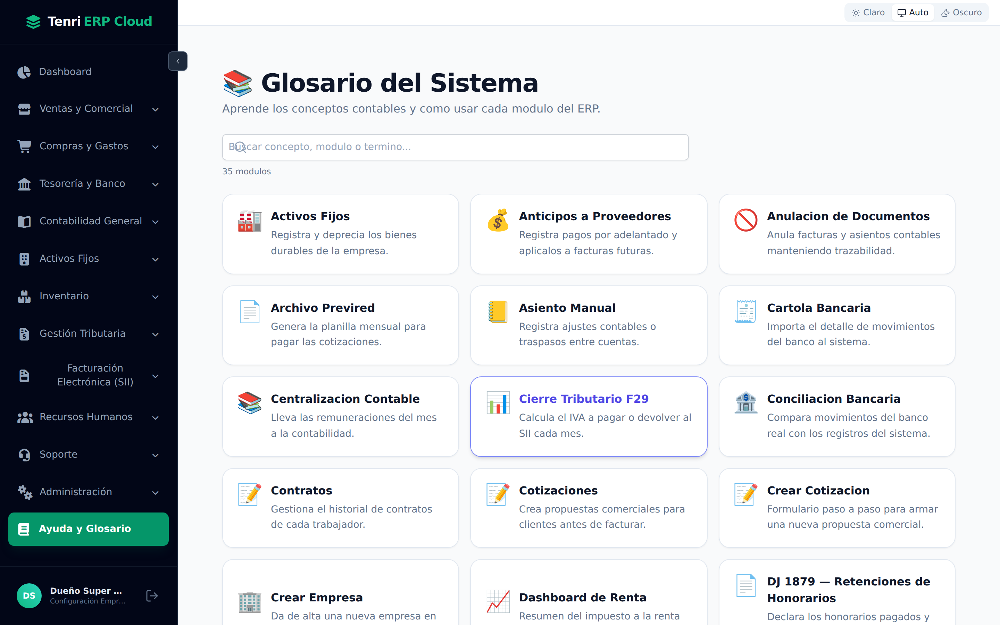
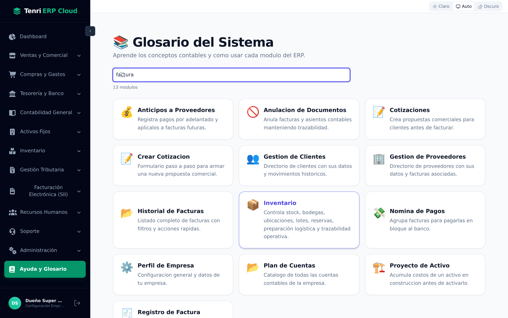
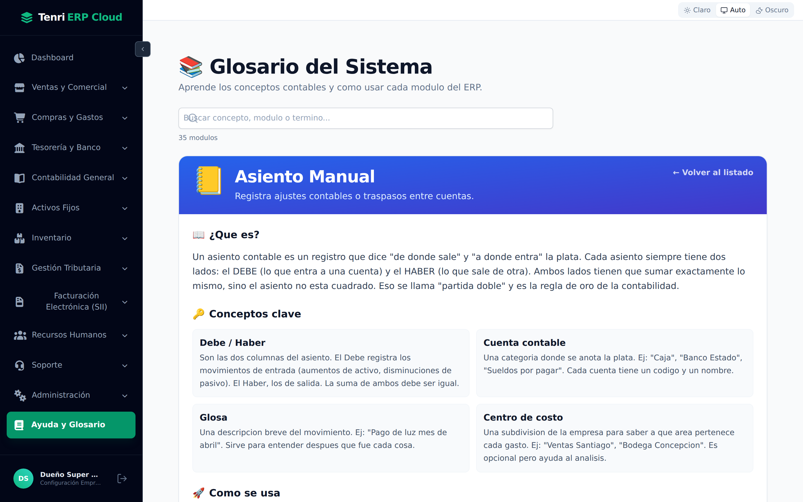
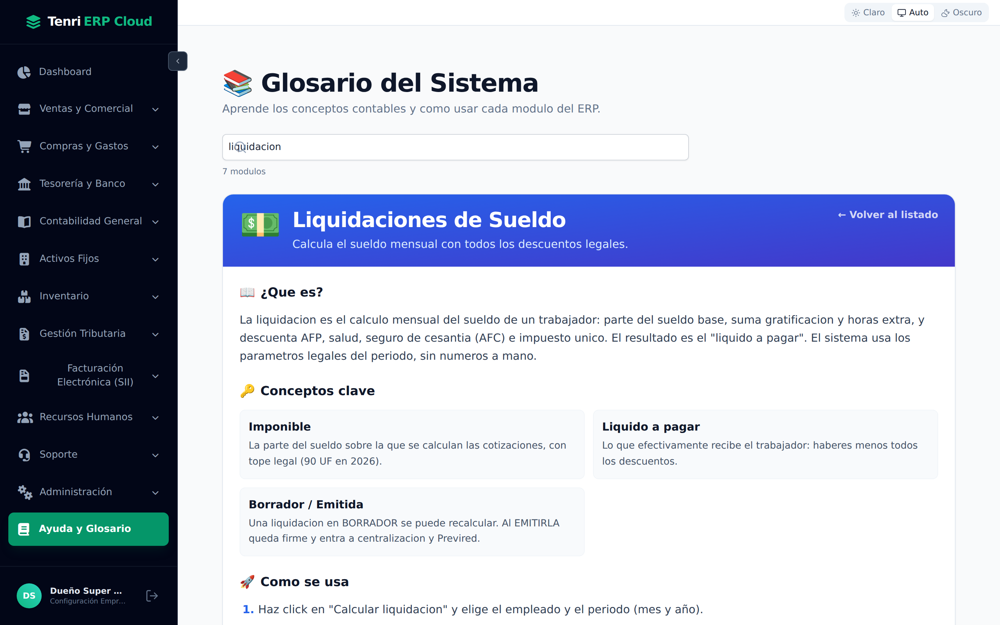
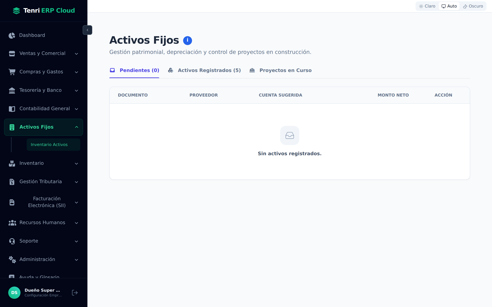
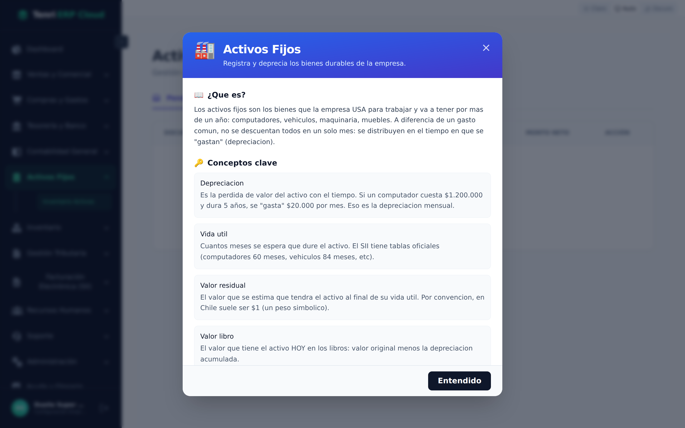

35 conceptos contables explicados en lenguaje claro, con pasos de uso y errores comunes. Más la ayuda contextual disponible en cada pantalla del sistema.

Su guía de referencia siempre disponible, sin salir del ERP.
El módulo Ayuda y Glosario (accesible desde el menú lateral como "Ayuda y Glosario") es la enciclopedia interna del sistema: explica qué es cada concepto, cómo se usa la pantalla y cómo resolver los errores más comunes, todo en lenguaje claro y sin tecnicismos innecesarios.
| Recurso | Dónde está | Para qué sirve |
|---|---|---|
| Glosario del Sistema | Menú → Ayuda y Glosario | Buscador y catálogo completo de 35 conceptos del ERP. |
| Ayuda contextual | Botón i en cada pantalla | Abre al instante la ficha del glosario del módulo activo, sin navegar. |
El catálogo de 35 conceptos organizado en tarjetas.
Al ingresar al Glosario verá una cuadrícula con todos los conceptos disponibles. Cada tarjeta muestra el icono, el título del módulo o concepto y un resumen de una línea.
Encuentra cualquier término en segundos.
Use la barra de búsqueda en la parte superior del Glosario para filtrar las tarjetas. La búsqueda es instantánea: filtra por título, resumen y conceptos internos mientras escribe. No es necesario presionar Enter.

Todo lo que necesita saber de un módulo en una sola pantalla.
Al hacer clic en una tarjeta se abre la vista de detalle. Cada ficha tiene hasta cinco secciones:
| Sección | Contenido |
|---|---|
| ¿Qué es? | Explicación en lenguaje simple de qué hace el módulo o concepto, sin tecnicismos. |
| Conceptos clave | Glosario interno: los términos más importantes del módulo con su definición breve. |
| Cómo se usa | Lista numerada de los pasos para operar la pantalla desde cero. |
| Errores comunes | Los problemas más frecuentes y su solución paso a paso. |
| Tip | Un consejo avanzado de productividad o buena práctica para ese módulo. |


Use el enlace ← Volver al listado (esquina superior derecha de la ficha) para regresar a la cuadrícula de conceptos.
La ficha del glosario, disponible sin salir de la pantalla en la que trabaja.
En la mayoría de las pantallas del ERP verá un pequeño botón azul circular con la letra i junto al título de la página. Es el botón de Ayuda contextual: al presionarlo se abre directamente la ficha del glosario correspondiente al módulo activo, sin necesidad de navegar al Glosario.


El modal de ayuda contextual muestra exactamente el mismo contenido que la ficha del Glosario: descripción, conceptos clave, pasos de uso, errores comunes y tip. Para cerrarlo presione ×, haga clic fuera del modal o presione Escape.
Botón i en la pantalla → cuando ya está trabajando y tiene una duda puntual sobre esa pantalla específica.
Glosario (menú lateral) → cuando quiere explorar un concepto sin estar en esa pantalla, buscar un término que no recuerda, o aprender antes de usar una función nueva.
Los 35 conceptos disponibles en el sistema.
A continuación, el catálogo completo de fichas disponibles en el Glosario, organizadas por área temática:
Ha llegado al final de la colección de manuales de Tenri ERP Cloud. Los 14 módulos cubren el ciclo completo de la gestión empresarial chilena.